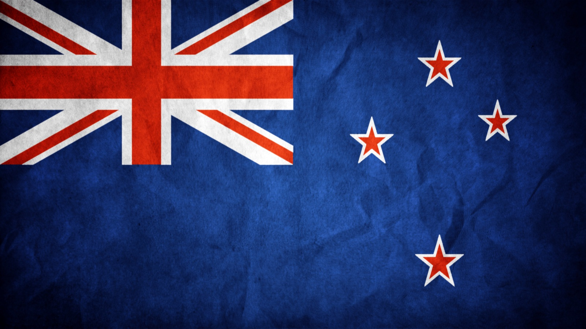
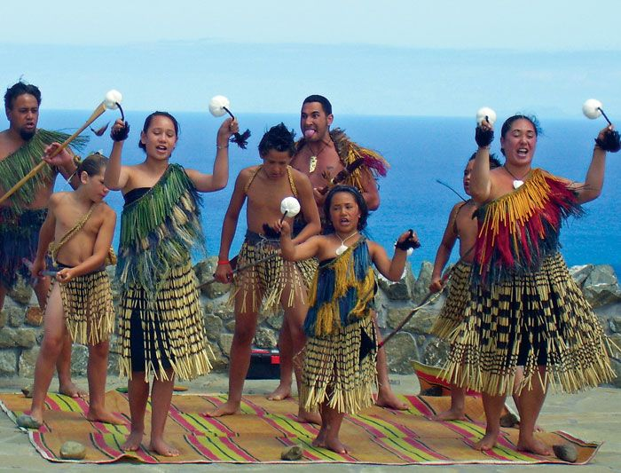
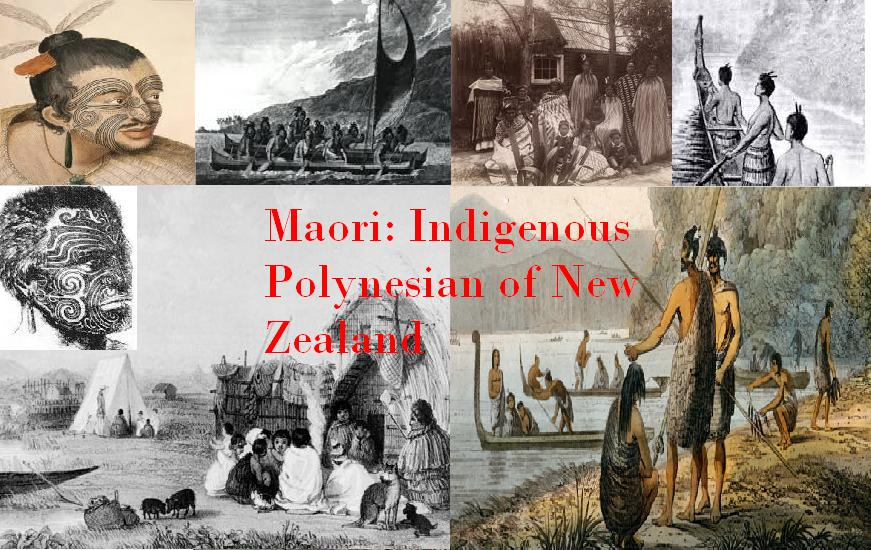
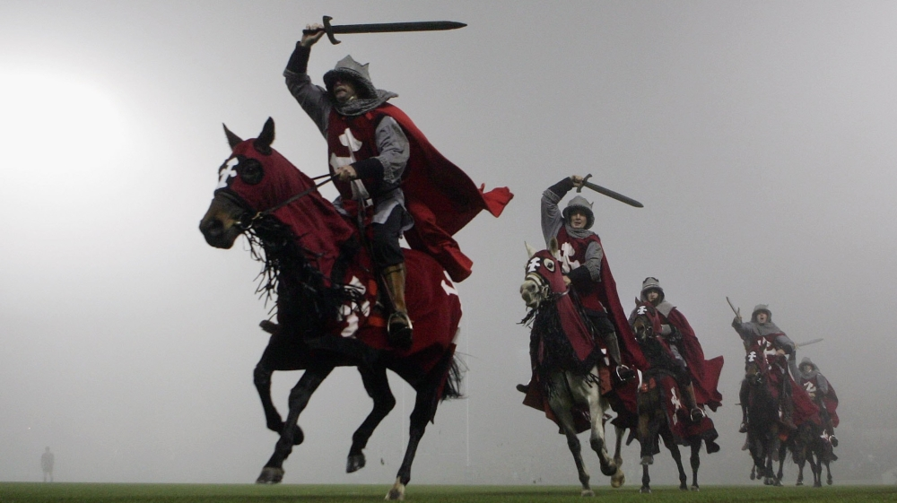
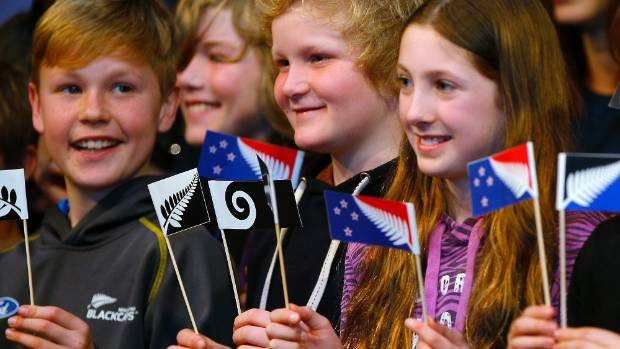

New-Zealand was discovered and settled by Polynesians, who developed a distinct Māori culture there approximately 700-750 years ago. Maori society was adapted to a cool, temperate environment rather than a warm, tropical one. Abel Tasman, a Dutch navigator was known to sight New Zealand on 13 December 1642. From the later part of the 18th century, the country was visited by explorers and other sailors, traders and adventurers on a regular basis. The Treaty of Waitangi was signed between the British Crown and Māori chiefs, bringing New Zealand into the British Empire and giving Māori the same rights as British People.
In the 21st century, international tourism is a major contributor to the New Zealand, and the service sector more generally has grown.
Māori were the first to arrive in New Zealand, journeying in canoes from Hawaiki about 1,000 years ago. A Dutchman, Abel Tasman, was the first European to sight the country but it was the British who made New Zealand part of their empire.
In 1840, the Treaty of Waitangi was signed, an agreement between the British Crown and Maori. It established British law in New Zealand and is considered New Zealand’s founding document and an important part of the country's history. The building where the treaty was signed has been preserved and, today, the Waitangi Treaty Grounds are a popular attraction.
In 1788 the Colony of New South Wales had been founded. According to the future Governor, Captain Arthur Phillip's amended Commission, dated 25 April 1787 the colony of New South Wales included "all the islands adjacent in the Pacific Ocean within the latitudes of 10°37'S and 43°39'S" which included most of New Zealand except for the southern half of the South Island. In 1825 with Van Diemen's Land becoming a separate colony, the southern boundary of New South Wales was altered to the islands adjacent in the Pacific Ocean with a southern boundary of 39°12'S which included only the northern half of the North Island. However, these boundaries had no real impact as the New South Wales administration had little interest in New Zealand.


Throughout the 19th and much of the 20th century, the ‘homeland’ of Britain had an enormous influence on New Zealand. Government administration, education, and culture were largely built on British models. New Zealand troops fought, and suffered severe casualties in the Boer War and the two World Wars. As Prime Minister Michael Savage said about England in 1939, ‘where she goes, we go, where she stands, we stand’. While New Zealand is still heavily influenced by its colonial heritage, the country now has its own strong sense of identity. While still a member of the British Commonwealth, and maintaining close, friendly relations with the USA, New Zealand now has a far more independent trading and foreign policy. Since the mid 1980s, New Zealand has been a nuclear free zone, with its armed forces primarily focused on peacekeeping in the Pacific region.


You'll find amazing Māori historic sites and taonga (treasures) - as well as beautiful colonial-era buildings - dotted throughout the country. A walk around any New Zealand city today shows what a culturally diverse and fascinating country we have become.